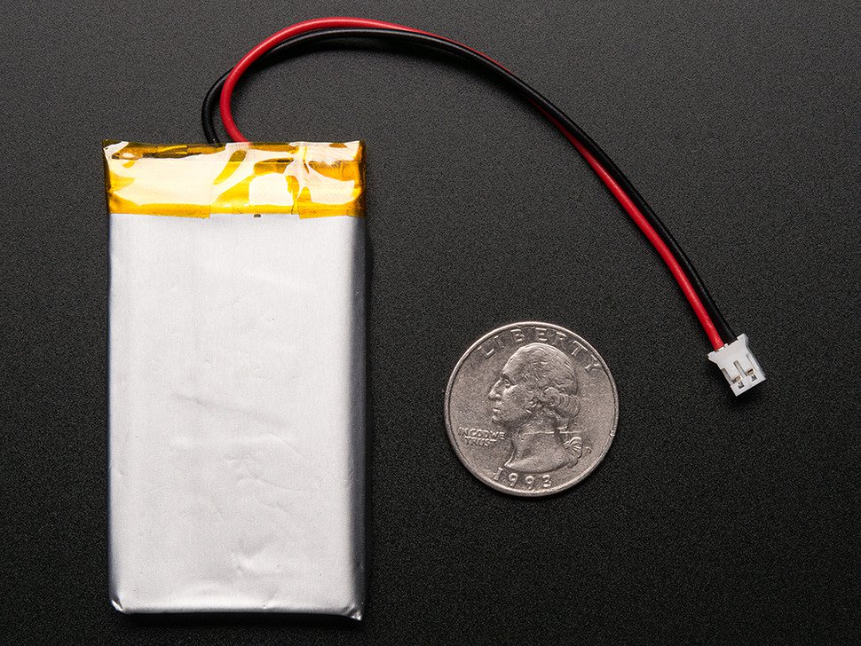
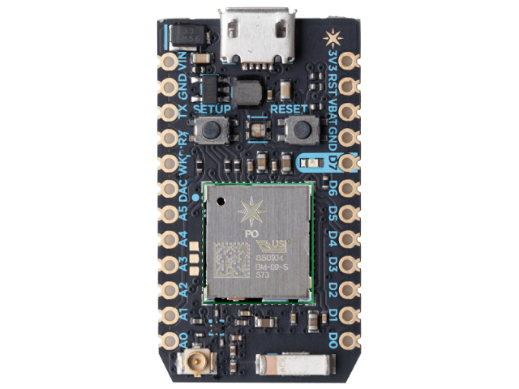
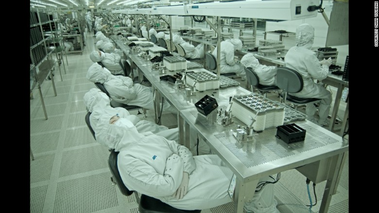
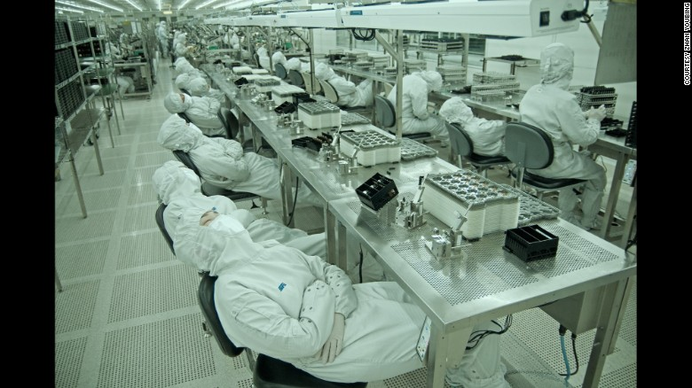

The Internet of Things
October 11, 2017
Eric Mattison
emattison@gmail.com
https://github.com/eric02138/iot_harvard
I was once like you.
Huh?
I thought you were here to talk about IoT at Vertex.
Well, sorta.
Challenge 1: Sorting Eggs
How can I tell if an egg is uncooked or hard-boiled?


#!/usr/bin/env python
import RPi.GPIO as GPIO, time, os
DEBUG = 1
GPIO.setmode(GPIO.BCM)
def RCtime (RCpin):
reading = 0
GPIO.setup(RCpin, GPIO.OUT)
GPIO.output(RCpin, GPIO.LOW)
time.sleep(0.1)
GPIO.setup(RCpin, GPIO.IN)
# This takes about 1 millisecond per loop cycle
while (GPIO.input(RCpin) == GPIO.LOW):
reading += 1
return reading
while True:
print RCtime(18) # Read RC timing using pin #18
Challenge 2: Cooking the Raw Eggs

Challenge 3: Make Toast


IoT
Just another buzzword?
T
"Things"
I
"The Internet"
French Solar Road
Solar Roadways
(Freakin')
o
"of"
How did we get here?
(From ancient history to modern times in four slides)
1946 - ENIAC

ENIAC - Stats
Consumed 150 kilowatts of electricity
Weighed 27 tons
5000 operations per second (base rate, multiplication and sq roots took longer)
Cost $487,000
($6,740,000 in 2016 dollars)
2017 - iPhone X

iPhone X - Stats
Consumes about 1 kilowatt of electricity
Weighs 6.1 ounces
All cores together amount to a clock speed of approximately 2.5GHz
Cost $999 ($999 in 2017 dollars)
Size and Weight
(duh)
Power


10 Watts (watching Youtube)
49 Watt/Hour Capacity
From this...

...to this.

Infrastructure

Cost


~$25

~$20
Globalization
 

Per month income at PegaTron:
4,200 yuan to 5,500 yuan
$650 - $850
Globalization ↗
+
Cost ↘
+
Infrastucture ↗
+
Power ↗
+
Size and Weight ↘ =
?
The Future
Globalization ↗
Cost ↘
Infrastructure ↗
Power ↗
Electric Skateboard Hacking
Size and Weight ↘
(duh)
We Seek the Grail
Most Common Job in Every State
4%
Am I still a Masshole if I can't cut anyone off?
So is IoT just another buzzword?